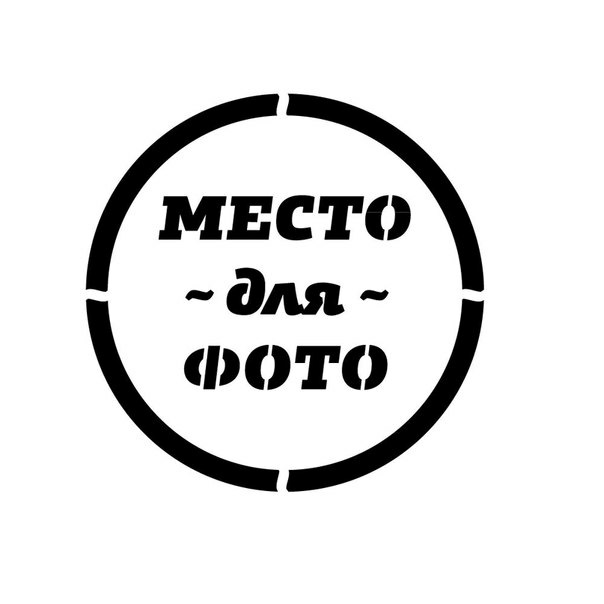

Мобильный телефон:89099999999 Электронная почта: aaabbbbbbbb.111222@mail.ru Возраст: 37 ktn, Проживание: г. Астрахань, ул. Астраханская д.1 ап. 978, Зарплатные ожидания: 90 000,00 д.е. Гражданство: Россия
Учебное заведение: Российский Государственный Гуманитарный Университет, г. Астрахань Земля, г. Москва Дата окончания: 2009 год Факультет: Финансы и кредит Специальность: Экономист
Aнглийский язык: Разговорный Турецкий: Начальный уровень
Водительские права: Нет
Умения: Умение мыслить системно (стратегически); умение планировать, рационально использовать служебное время и достигать результата; коммуникативные умения; умение управлять изменениями; умение выяснять точный смысл содержания нормативно-правовых актов (норм), используя различные виды толкования; применение современных информационно-коммуникационных технологий, использование межведомственного и ведомственного электронного документооборота, информационно-телекоммуникационных систем; умение внедрять и использовать научные результаты в практику решения поставленных задач; умение сжато и структурировано представить материал по вопросам, касающимся деятельности Службы; умение организовывать контроль за эффективностью использования ресурсов, учитывать результаты данного контроля при дальнейшем использовании ресурсов и т.д..
Период работы: с марта 2015 по настоящее время Должность: Заместитель начальника финансово-экономического отдела В компании: Волго-Каспийское территориальное управление Федерального агентства по рыболовству, г. Астрахань Должностные обязанности:
Навыки: Профессиональный навык работы в 1 с Бухгалтерия гос. учреждения, в 1 с Зарплата и кадры 8.2,3.0, СБИС, Сбербанк бизнес - онлайн. Повышение квалификации «Ведение заработной платы в электронных системах учета».